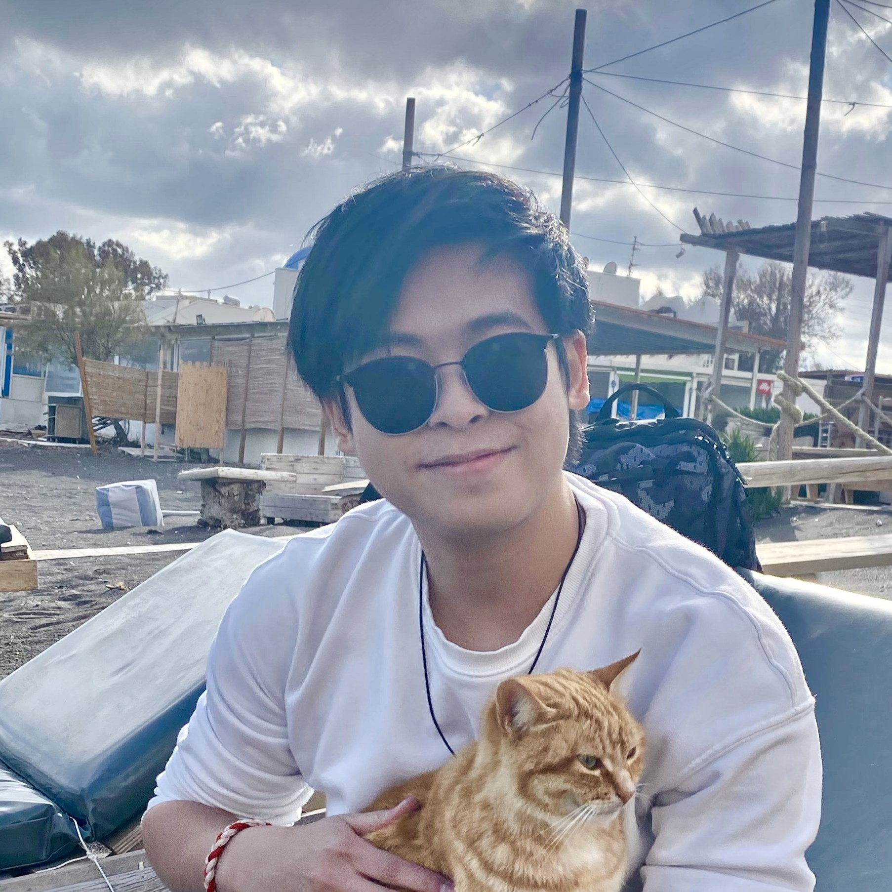

∂
sin.liu [at] qmul.ac.uk
School of Mathematical Sciences
Queen Mary University of London
London, E1 4NS
I am a second-year PhD student in pure mathematics at Queen Mary, supervised by Dr. Amaranta Membrillo Solis. Before that, I studied at University of Warwick.
My research includes:
- Toric Topology: Spaces called moment angle complexes that are built from combinatorial data;
- Toric geometry: Varieties that contain a dense tori whose action extends to the entire variety.
Broadly speaking I am interested in the world of Algebraic Topology, and I wrote my FYP on Excisive Functors and Cohomology Theories.